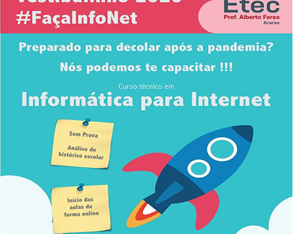

Sobre Nós
Projeto se originou de um TCC(Trabalho de Conclusão de Curso) na Etec Professor Alberto Feres na cidade de Araras-Sp, referente ao curso técnico de (Informática para Internet), buscamos trazer uma solução de automatização de baixo custo para irrigação de plantas domésticas de forma inteligente.
A ideia e o objetivo do projeto!
A ideia de realizar esse projeto veio de um dos integrantes do grupo, que tinha o desejo de desenvolver uma automação para irrigação de plantas com os objetivos de:
- Ter um baixo custo;
- Uso sustentável de água;
- Facilitar o processo de irrigação;
Instituição e Curso!
Conheça melhor a instituição técnica de ensino Professor Alberto Feres e o curso de Informática para Internet.
Escola Professor Alberto Feres:
Criada e instalada em 1961, com o nome de Escola Artesanal de Araras, oferecendo cursos de Desenho Técnico, Mecânica, Corte e Costura e Artes Culinárias. Depois foi instalado o curso Ginasial, passando a se chamar Ginásio Industrial de Araras. A partir de 1973, também ministrou cursos técnicos em nível de 2º Grau. Em 1994, a escola foi incorporada ao Centro Paula Souza.
Fachada Etec Professor Alberto Feres.
Informática para Internet:
O TÉCNICO EM INFORMÁTICA PARA INTERNET é o profissional que desenvolve e realiza manutenções em websites, portais na Internet e Intranet. Utiliza ferramentas de desenvolvimento de projetos para construir soluções que auxiliam o processo de criação de interfaces e aplicativos empregados no comércio e marketing eletrônicos.
Cartaz de divulgação de InfoNet.
Você Sabia?
-
A agricultura consome cerca de 70% do total da água gasta no mundo.
ProfessorT -
Apesar do nosso país ser muito rico em recursos hídricos, com uma média de 12% da água doce do mundo, com seus grandes rios, reservatórios subterrâneos, florestas tropicais e fortes chuvas, em algumas regiões não tem tanta disponibilidade de água potável.
ProfessorT
Nossos integrantes
Marcos Gustavo Guisleri
Iniciante em desenvolvimento front-end e back-end.
Gabriel Carvalho Trindade
Web Designer e gerenciador de layout
Danilo Roberto Santos
Supervisor e gerenciador de documentação.